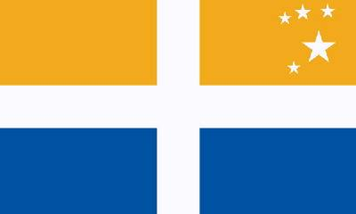

Борис Акунин
Мой календарь
Если вы сожалеете, что зря с кем-то поссорились - или пускай не зря, но уже хватит, то сегодня хороший день, чтобы помириться. Особенно, если ссора затяжная.
17 апреля 1986 года завершилась миром самая длинная война в истории человечества.
Раздор продолжался 335 лет.
Есть у входа в пролив Ла-Манш маленький архипелаг Силли, который принадлежит британской короне, но с незапамятных времен считается автономной территорией. Население две с половиной тысячи человек.
Во время английской гражданской войны Силли был опорным пунктом роялистского флота, который нападал в том числе и на голландцев, союзников Кромвеля. Поэтому в 1651 году Голландия официально объявила войну враждебным островам, которые тогда в состав Англии не входили.
А потом про эту войну все как-то позабыли. Боевых действий никогда никаких не велось.
Шли века. Обитатели морского захолустья люди неторопливые. Лишь триста тридцать пять лет спустя председатель совета местного самоуправления направил в посольство Нидерландов письменное предложение о заключении мира. Голландцы подняли архивы, убедились, что всё правда - война продолжается. На острова прибыл полномочный представитель Нидерландского королевства и торжественно подписал мир - без аннексий и контрибуций. Все страшно веселились.
Воспользуйтесь же этой славной датой, чтобы сделать первый шаг, протянуть руку, запеть «мирись-мирись-мирись, и больше не дерись».